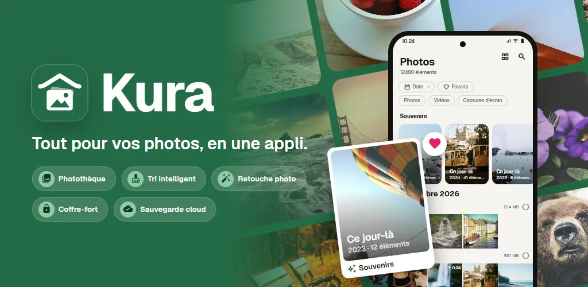
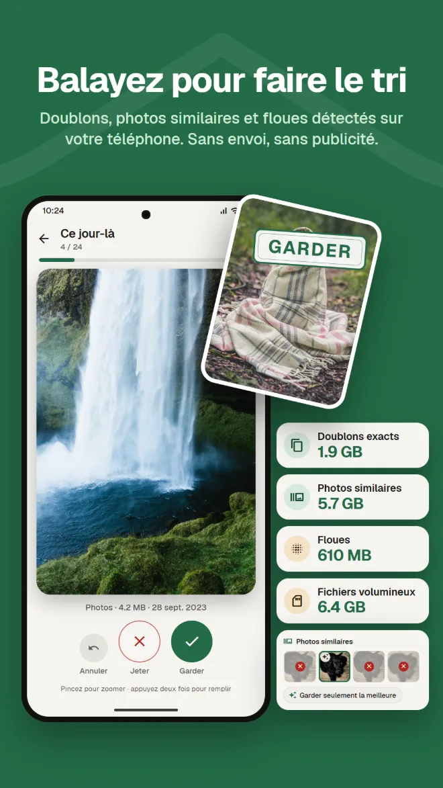
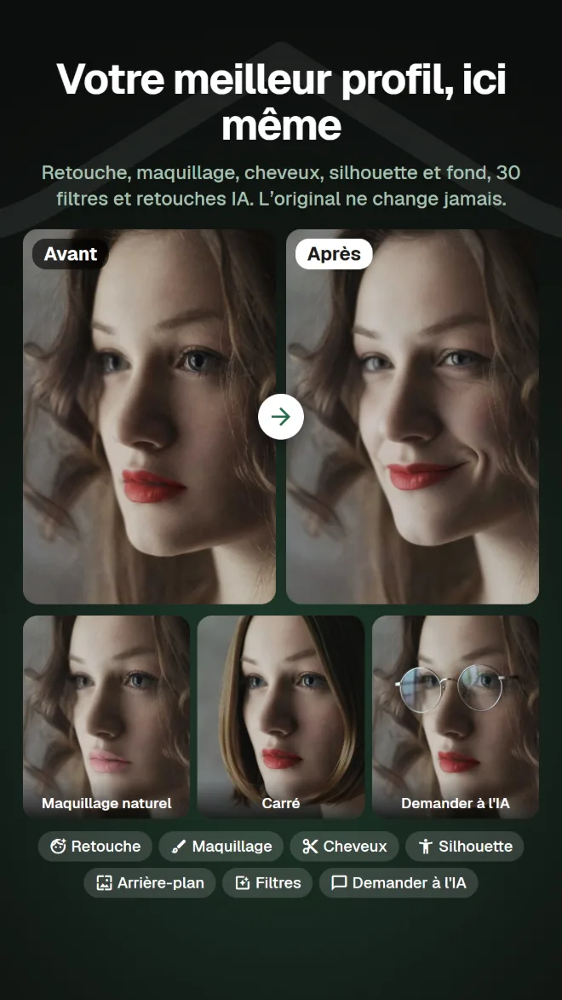
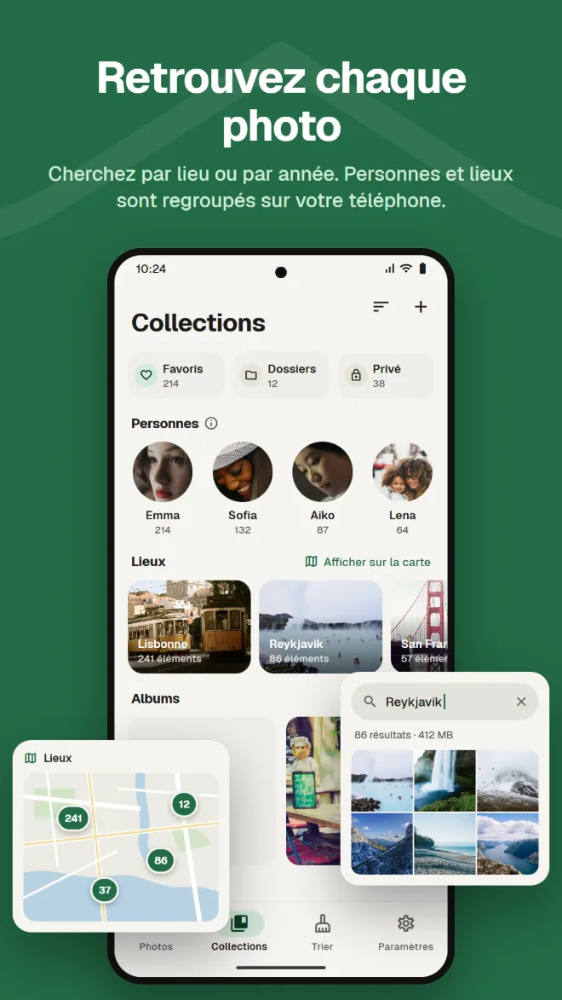
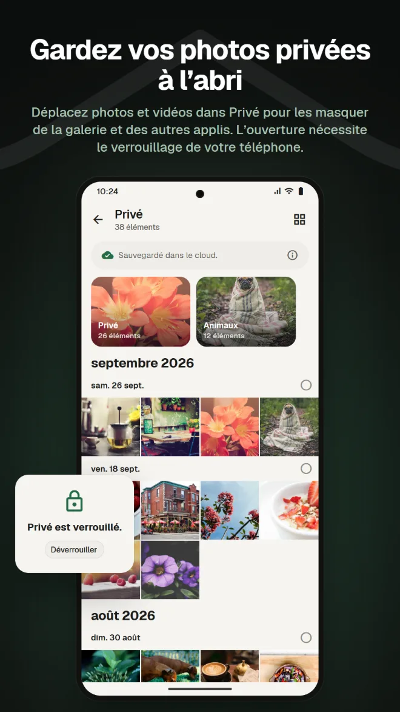
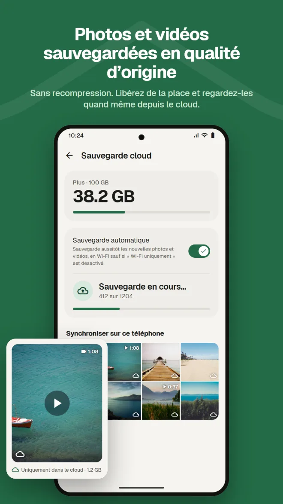
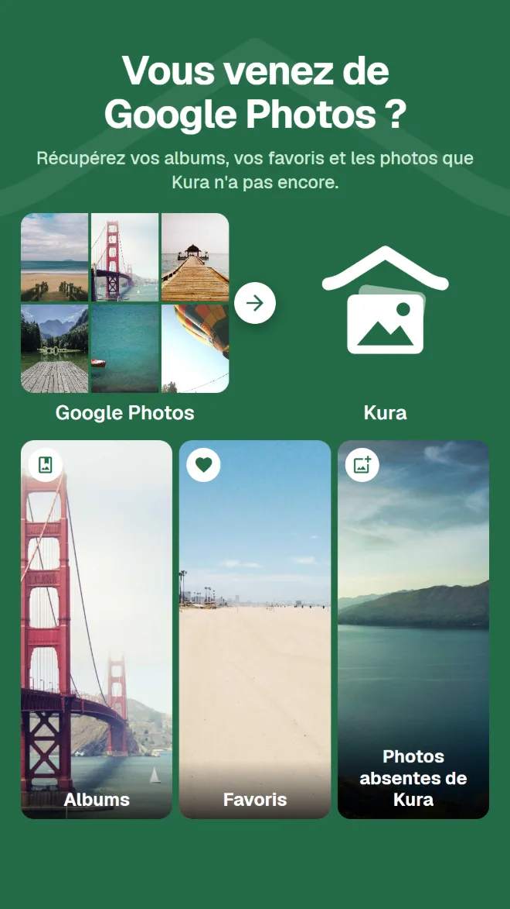

Recherche par contenu
Retrouvez vos photos par lieu, par ce qu’elles montrent ou par le texte qu’elles contiennent.
Galerie, tri, retouche IA, espace privé, sauvegarde et transfert depuis Google Photos. Avec Kura, plus besoin d’une appli différente pour chaque chose.
Android 11 ou ultérieur · Consulter, trier et supprimer est gratuit · Connexion avec Google

Une galerie pour les regarder, un nettoyeur pour libérer de l’espace, une autre appli pour retoucher, un autre service pour sauvegarder. À chaque changement, il faut retrouver la même photo.
Kura fait tout cela dans une seule photothèque.
Voir, trier, retoucher et sauvegarder les mêmes photos, au même endroit.
De la photothèque au tri, à la retouche, au transfert et à la sauvegarde.
Kura repère sur votre téléphone les doublons exacts, les photos similaires, les photos floues et les gros fichiers. Balayez à droite pour garder, à gauche pour jeter, et voyez tout de suite combien d’espace vous pouvez libérer.

Retouche, remodelage, maquillage, cheveux et arrière-plan, plus 30 filtres, réglages et recadrage. Des filtres qui rendent les plats appétissants et des réglages pour toute la silhouette. Vous enregistrez toujours une copie : l’original ne change pas.

Une grille par date, avec les souvenirs du même jour les années passées. Recherchez par lieu, par ce que montre la photo ou par le texte qu’elle contient ; les visages sont regroupés par personne sur votre téléphone.

Déplacez photos et vidéos dans Privé pour les masquer de la galerie et des autres applis. L’ouverture se fait avec le verrouillage d’écran de votre téléphone.

Sauvegardez photos et vidéos sans recompression. Retirez du téléphone les copies sauvegardées pour libérer de l’espace ; elles restent visibles depuis le cloud.

Envoyez simplement le .zip de Google Takeout depuis l’appli ou l’appli web. Kura récupère vos albums, vos favoris et les photos que Kura n’a pas encore. Le serveur de Kura le décompresse en arrière-plan : vous pouvez fermer l’appli et le navigateur.

Les photos de votre cloud Kura se consultent, s’organisent, se trient, se retouchent, se partagent et s’importent dans l’appli web, comme dans l’appli. Les favoris restent synchronisés avec l’appli.
Ouvrir l’appli webConnexion avec Google · En anglais et en japonais
Tout ce qu’on attend de la galerie de tous les jours.
Retrouvez vos photos par lieu, par ce qu’elles montrent ou par le texte qu’elles contiennent.
Visages regroupés par personne sur votre téléphone, et vos photos sur une carte.
Les photos du même jour les années passées, en haut de votre photothèque.
Réglages de luminosité et de couleur, recadrage et pinceau, plus des filtres pour la cuisine.
Ajoutez une date d’expiration et un mot de passe, et envoyez à ceux qui n’ont pas l’appli.
Confirmation avec le verrouillage d’écran à chaque ouverture. Vous pouvez aussi masquer Privé.
Installez-la et vos photos apparaissent, déjà organisées.
Téléchargez-la sur Google Play (Android 11 ou ultérieur)
Choisissez « Tout autoriser » pour charger toute votre photothèque
Connectez-vous avec votre compte Google
Triez tout de suite ; ajoutez la sauvegarde quand vous en avez besoin
Sans publicité. Vous ne payez que si vous utilisez le cloud.
Tout ce qui se fait sur votre téléphone
Facturés chaque mois via Google Play. Résiliables à tout moment
Google Play affiche les prix dans votre devise locale.
Vos photos ne quittent votre téléphone que lorsque vous faites une action qui les envoie clairement quelque part.
La détection des doublons, du flou, des visages, des objets et du texte se fait sur votre téléphone. Aucune photo n’est envoyée pour être triée.
Android vous demande avant toute suppression de fichier, et les photos jetées restent dans la corbeille jusqu’à ce que vous la vidiez.
À la connexion, notre serveur ne conserve que l’identifiant de votre compte Google. Votre nom et votre adresse e-mail ne sont jamais envoyés.
Les retouches IA n’envoient que la zone autour du visage, et ni la photo ni le résultat ne sont conservés sur le serveur.
Sans publicité · Consulter, trier et supprimer est gratuit